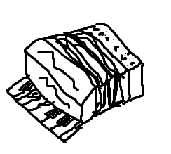

This is Isaac Houston's blog page for MI 349, Web Design and Development. Below you will find my blog posts, as well as a link to learn more about me! Click the link below for more details.
It is undoubtedly a very difficult task to understand the nature of existence, or how to even define the term. In the age of technology, can the standard of which we say “this exists” be extended to ideas or information? I would certainly argue that we can state that something exists even while it is in its simplest form. Consider a human being, which is ultimately made up of cells and genetic code, which contain vital information. While this information is transcribed upon the cells, this information could also be considered to exist regardless of whether or not it is being utilized by a cell. I would ask you to also consider an idea: if NASA were to launch a newspaper into outer space (and nobody were to read it or even know its contents), would this newspaper (and its ideas) still be deemed to exist? Perhaps not by human society, but by the universe as a whole. Every single atom, quark, and any energy of any type is information that the universe contains within itself, regardless of whether or not that information is utilized by human beings or not. Ultimately, the idea of whether something exists or not comes down to what standards an individual classifies something as existing.

Learning how to play the accordion can be a very difficult task at first. You must learn how to control the bellows, play the bass machine, as well as learning the treble keys on a piano-type accordion. However, I would like to propose a few tips to help expedite the process of learning this underappreciated instrument. When you pick up the accordion, you should be able to comfortably put the straps on to hold the accordion in place while you play. If the straps are adjusted too high, your arms will quickly grow tired. Too low, and you will not be able to reach the keys. The proper height for the straps will have the top of the accordion a couple of inches below your collarbone. Now, adjust the hand-strap for your left hand so that you can move the bellows without your hand sliding upwards from gravity. Do not make it too tight, or you will lose the ability to slide your hand to the bass buttons that you will need to play in more advance music. Finally, your right hand should be loose and resting on the keyboard. The keys are smaller than a regular piano, so you will need to get used to that as well when you first start learning.